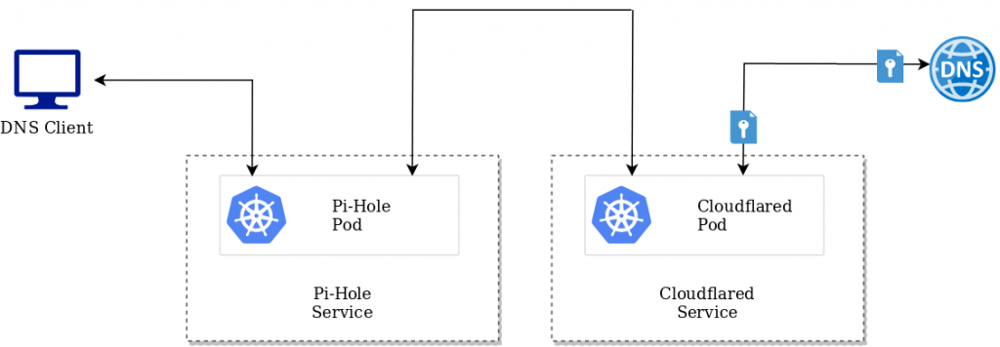
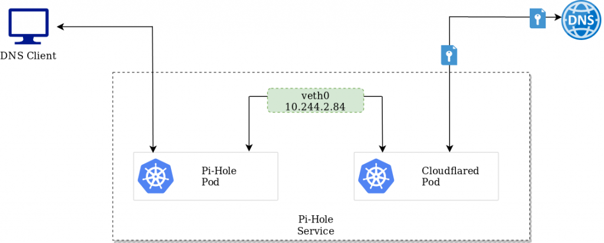
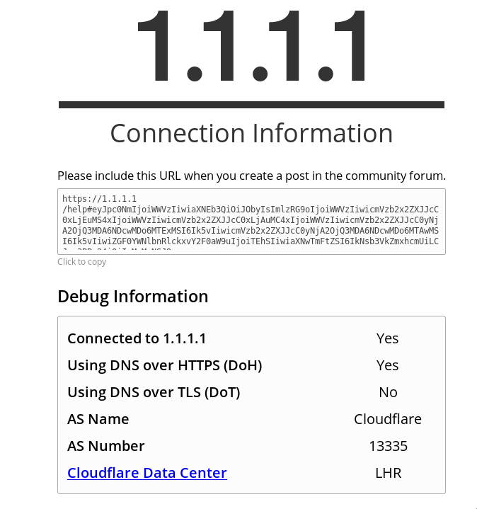

Pi-Hole and K8s v2 - Now with DNS over HTTPS
In a previous post, I went through the process of configuring Pi-Hole within a Kubernetes cluster for the purpose of facilitating a network-wide adblocking. Although helpful, I wanted to augment this with DNS over HTTPS.
Complete manifests can be found here. Shout out to visibilityspots for the cloudflared image on Dockerhub
Why?
DNS, as a protocol, is insecure and can be prone to manipulation and man-in-the-middle attacks. DNS over HTTPS helps address this by encrypting the data between the DNS over HTTPS client and the DNS over HTTPS-based DNS resolver. One of which is provided by Cloudflare.
Thankfully, Pi-Hole has some documentation on how to implement this for the traditional Pi-Hole setups. But for Kubernetes-based deployments, this requires a different approach.
How?
The DNS over HTTPS client is facilitated by a Cloudflare daemon. In a traditional Pi-Hole setup this is simply run alongside Pi-Hole itself, but in a containerised environment there are predominantly two ways to address this:
As a separate microservice
This approach leverages two different deployments, one for the Pi-Hole service, and one for cloudflared. While workable, I felt that this was a less optimal approach

Service-To-Service communication between Pi-Hole and Cloudflared
As another container within the Pi-Hole pod
Given the tight relationship between these containers, and the fact their respective services run on different ports, this seems like a more efficient approach.

Intra-pod communication between Pi-Hole and CloudflareD
As the containers share the same network interface, one pod can access the other over either the veth interface, or simply the localhost address. For Pi-Hole, we can facilitate this via a configmap change:
apiVersion: v1
kind: ConfigMap
metadata:
name: pihole-env
namespace: pihole-system
data:
TZ: UTC
DNS1: 127.0.0.1#5054
DNS2: 127.0.0.1#5054
Testing
Once the respective manifest files have been deployed and clients are pointing to pi-hole as a DNS resolver, it can be tested by accessing https://1.1.1.1/help. As per the example below, DNS over HTTPS has been identified.
